Installation
- Theme use big amount of configuration settings which can be installed via demo content import.
- Configuration settings use post ID for establish links so import demo content will work correctly only on fresh WP installation.
- Download the Theme archive and extract the files it contains.
- Using an FTP client to access your host web server, upload Theme folder (with all files) to the wp-content/themes directory provided by WordPress.
- Activate theme.
Find message at the top of the admin screen
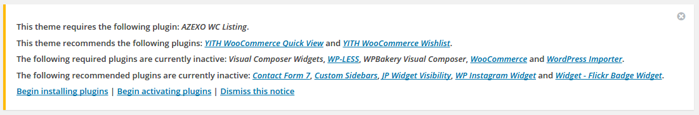
Install and activate all required plugins
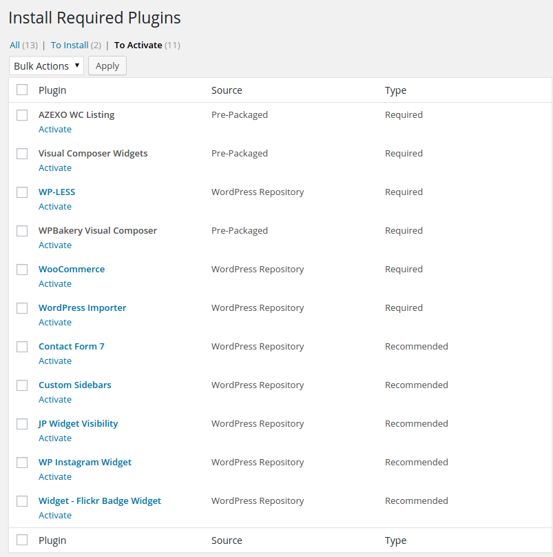
Import demo content for new site
Find menu item in administration sidebar
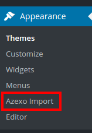
Import data with both checkboxes enabled
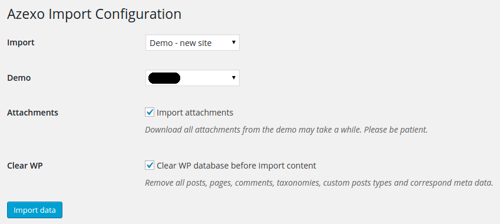
After import you need:
- Enable Visual Composer for Page.
- Select appropriate menu in "VC Widgets" for all "WP Custom Menu" elements settings.
- Configure all used plugins by theme
Import configuration for existing site
Find menu item in administration sidebar
Import configuration
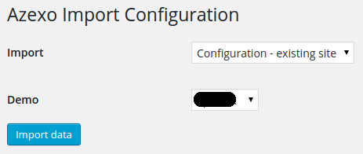
After import you need:
- Enable Visual Composer for Page.
- Select appropriate menu in "VC Widgets" for all "WP Custom Menu" elements settings.
- Create all contact forms used by "Contact Form 7" elements in "VC Widgets"
- Place imported "VC Widgets" in sidebars and configure visibility rules
- Use AZEXO elements in Visual Composer to make pages
- Configure all used plugins by theme
Places which need to translate
- Translate theme via loco
- Translate AZEXO plugins via loco
- Replace strings in form editor (or via JSON) of "AZEXO Query Forms" and "AZEXO Listings" plugins
- Replace strings in "AZEXO Options > Templates configuration"
- Replace strings in "AZEXO Options > WooCommerce templates configuration"
- Replace strings in fields tabs "AZEXO Options > Fields configuration"
- Translate all used plugins via loco
- Replace strings in Contact Form 7 templates
- External products "buy now" button – translated in product settings
How to update
- Make backup database, theme and AZEXO plugins
- Remove old theme folder
- Extract and place new theme folder
- Update (or install new) required plugins "Appearance > Install Plugins"
How to edit/create header
Header implementation based on (ordered as it rendered in HTML):
- Header sidebar - which support only wide "VC Widgets"
- Main header DIV - which support only header parts like: logo, primary_menu, secondary_menu, mobile_menu, mobile_menu_button, search
- Middle sidebar - which support only wide "VC Widgets" and can be used as part of post (or any custom post type) template by use "AZEXO Field" or "AZEXO Post" VC element.
Header/Middle sidebars use "JP Widget Visibility" plugin (alternative plugins "Widget Logic", "Conditional Widgets" also can be used) to allow show different header on different pages.
All used "VC Widgets" in Header/Middle sidebars can be found in "VC Widgets" list of left admin sidebar and can be edited via Visual Composer.
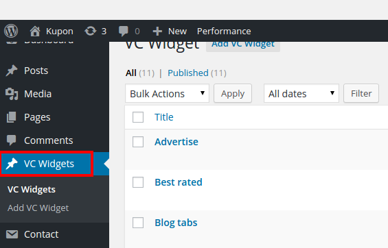
If you need to enable theme header on existing site then you need:
- Import theme configuration
- Add appropriate "VC Widgets" to Header/Middle sidebars
- Configure visibility rules of this widgets
To make boxed content inside "VC Widget" of header - "Row" VC element must have "container" class
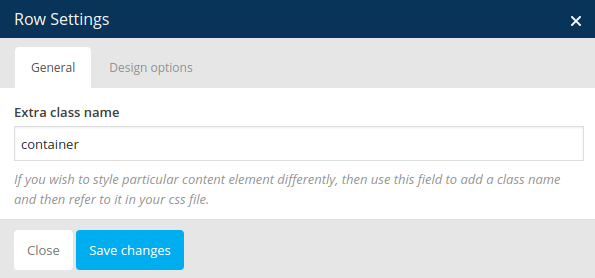
Main header parts
Theme have settings to set ordered list of header parts (for Main header DIV):
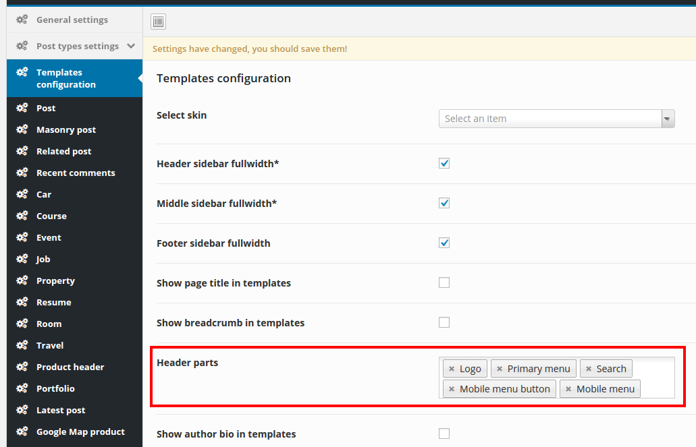
Theme can use custom header part which can be implemented as PHP template which must be placed in "template-parts" folder with "header-" prefix in file name. In this case it can be selected in "Header parts" theme settings.
How to edit/create widget
Many of theme widgets implemented as "VC Widget" to allow use same VC elements on pages and widgets.
All used "VC Widgets" in sidebars can be found in "VC Widgets" list of left admin sidebar and can be edited via Visual Composer.
Every "VC Widget" which use in sidebars must have root "Row" element with 1 column and "h-padding-0" class
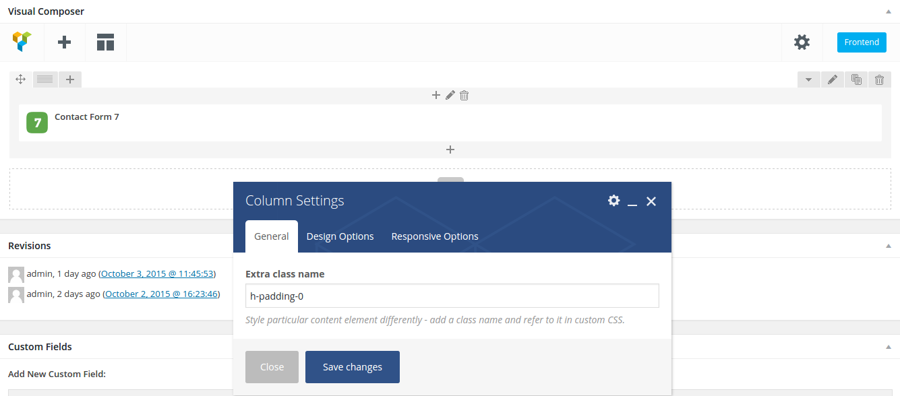
If you need to enable theme widgets on existing site then you need:
- Import theme configuration
- Add appropriate "VC Widgets" to sidebars
- Configure visibility rules of this widgets
Post/Product templates overview
For all Post/Product HTML rendering theme use general HTML structure:
<div class="entry">
<div class="entry-thumbnail (or entry-gallery, or entry-video)">
used for showing media part of post/product
<div class="entry-hover">
mostly used for fields which showed when mouse is hovered thumbnail
</div>
</div>
<div class="entry-data">
used for showing textual part of post/product
<div class="entry-header">
<div class="entry-extra">
mostly used for any fields above title
</div>
<div class="entry-title">
</div>
<div class="entry-meta">
mostly used for any fields under title
</div>
</div>
<div class="entry-content (or entry-summary)">
used to show content or excerpt with more button possibility
</div>
<div class="entry-footer">
mostly used for any fields under content
</div>
</div>
<div class="entry-additions">
rarely used for any fields for free positioning
</div>
</div>
Theme allow to choose which fields will rendered in every DIV of every post/product template:
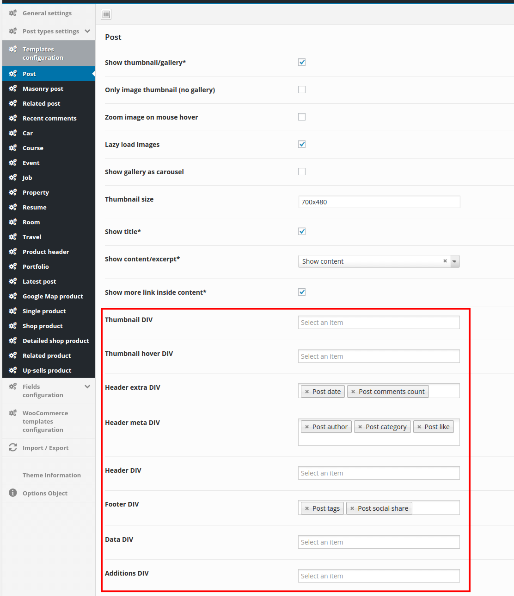
Custom Post/Product templates
Theme allow to create new custom templates via settings and generate new settings tabs automatically:
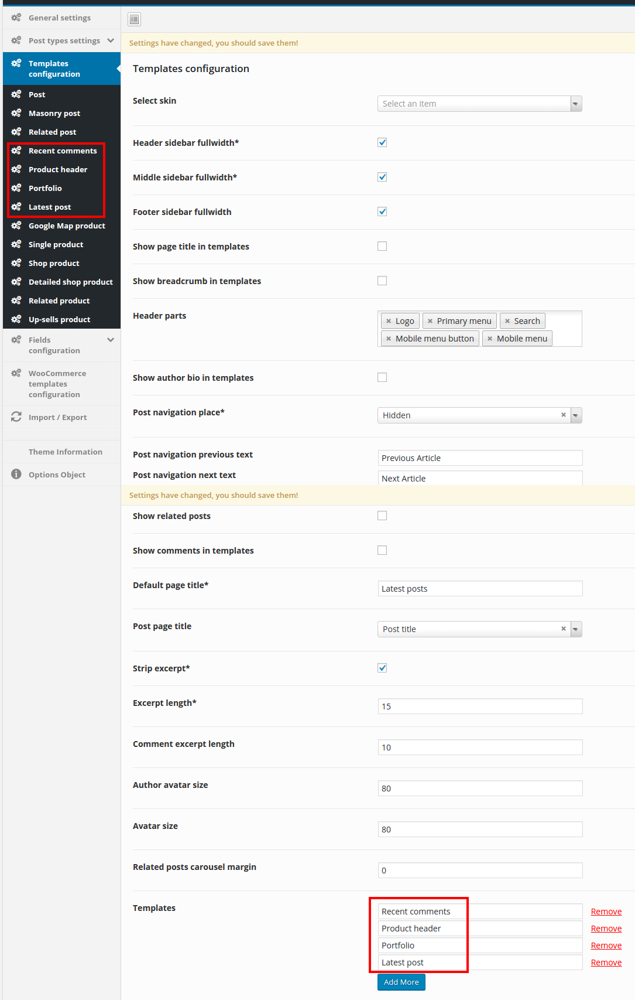
Visual Composer elements with Post/Product templates support
Visual Composer elements can be found in AZEXO tab:
- AZEXO - Posts list for rendering any post type list with any template (with carousel support).
- AZEXO - Post for rendering any post type with any template (without Post ID will be rendered current queried post). Useful for header, footer and widgets as single post/product template part.
How to change image cropping and size
Theme not have single standard for image dimensions – it crop image automatically for fast page load and output image in background cover mode to show image with any dimensions. if you have standard image dimensions on your site, then you need to set:
- image cropping in "AZEXO Options > Templates configuration > Shop product > Thumbnail size" (where "Shop product" is template name) for every template
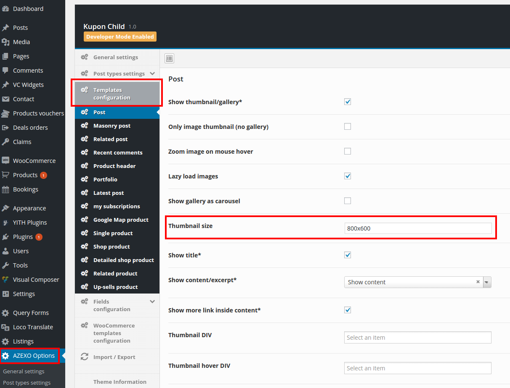 - "max-height" or "height" CSS property for DIV which contain product image as background (with ".image" class) - use template name (like "shop-product") class in your selectors - for every template
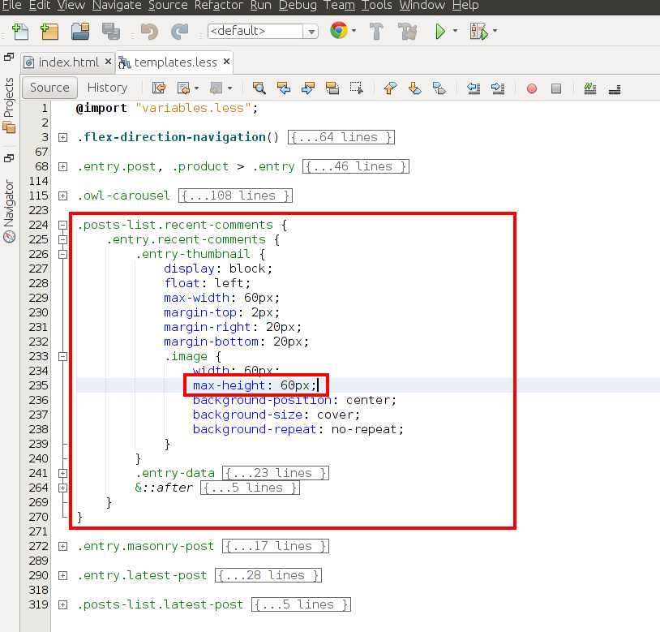
In this video showed one example for image size changing in AZEXO theme framework.
Custom fields templates
Custom field can be implemented as PHP template which must be placed in "fields" folder and started with:
<?php
/*
Field Name: Product event date time
*/
?>
In this case custom field will be registered in theme settings and Visual Composer elements automatically.
Visual Composer elements with theme fields support
Visual Composer elements can be found in AZEXO tab:
- AZEXO - Post field for rendering any field (without Post ID data will take from current queried post). Useful for header, footer and widgets as single post/product template field.
Registering meta keys with simple string values
Theme allow to register meta keys - after this they can be selected in theme templates settings and Visual Composer elements provided by theme:
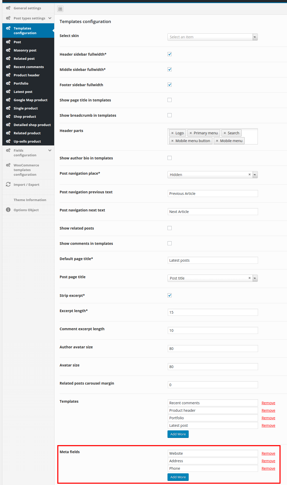
Visual Composer elements with static content
Visual Composer elements can be found in AZEXO tab:
- AZEXO - Generic Content universal static content element with HTML structure similar to post/product templates used in theme. CSS styles controlled by class entered in element settings.
- AZEXO - Carousel wrapper for "AZEXO - Generic Content" elements
- AZEXO - Panel wrapper for "AZEXO - Generic Content" elements
- AZEXO - Filters buttons for visibility control of DOM elements via jQuery selectors
- AZEXO - Taxonomy for output any WP taxonomy
- AZEXO - Progress bar replacement of native Visual Composer element with icons support
How to use Google Map from AZEXO Listings plugin
Google Map can be added to page via [azl-google-map] shortcode. This shortcode use main query to retrieve list of showed posts map.
To show full list of posts need to use "all" attribute: [azl-google-map all="1"]. By default this shortcode work only with "product" post type (provided by WooCommerce).
Location of posts take from latitude and longitude meta values.
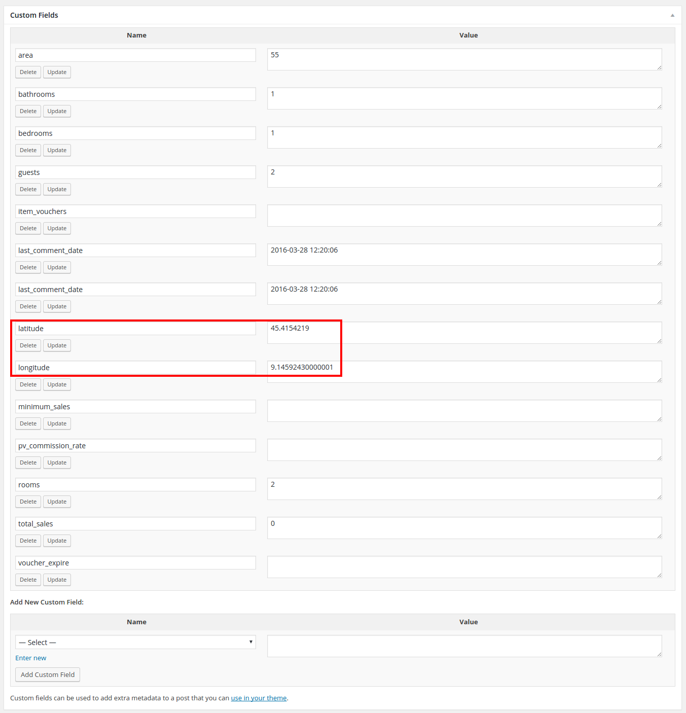
How to use change Google Map styles for AZEXO Listings plugin
Google Map Styles JSON can be generated on some online service and entered to plugin settings:
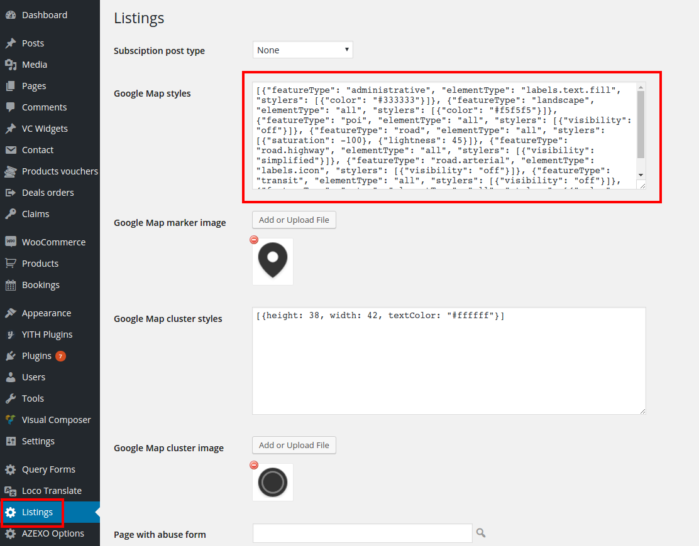
How to enable bookable product
Open product for edit and enable bookable checkbox.
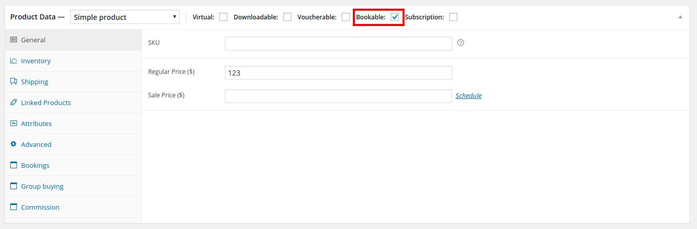
How to enable vouchers generation for product
Open product for edit and enable voucherable checkbox. After this you can optionally enter additional settings.
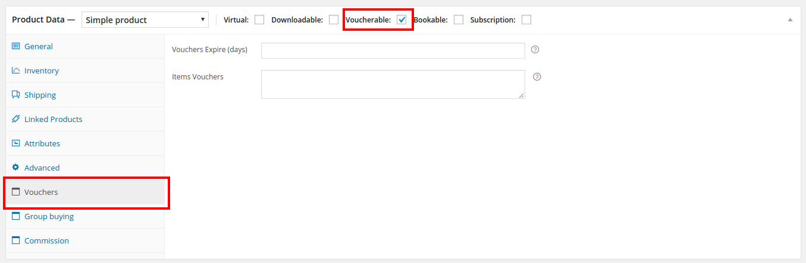
Vouchers will be generated as code-string after order payment and showed as order item meta data (on all order view pages) of appropriate product.
How to add vouchers redeem form
Vouchers redeem form can be added to page via [azv-voucher-check] shortcode.
How to enable group buying feature for product
Open product for edit and enter any minimum sales number of "Group Buying" settings tab.
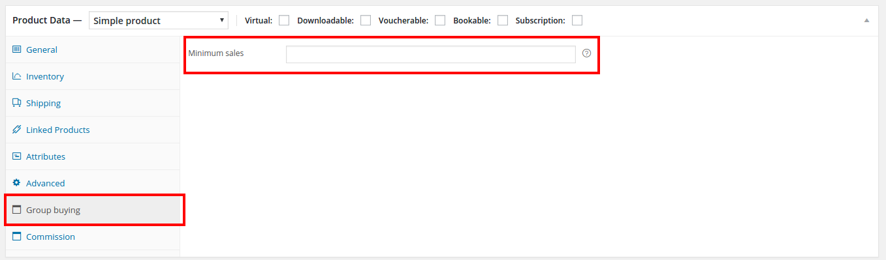
After this set sale price and sale dates interval.
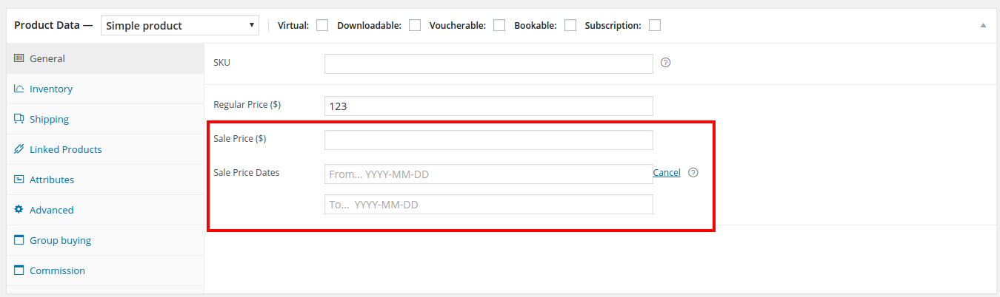
Use reports provided by plugin to make manual refunds for failed deals.
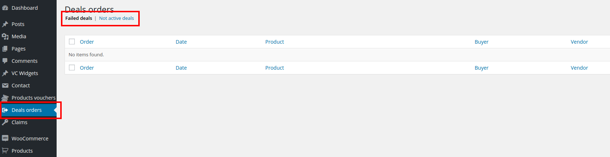
How to add "sales left" to product
This field can be added somewhere in the product template:
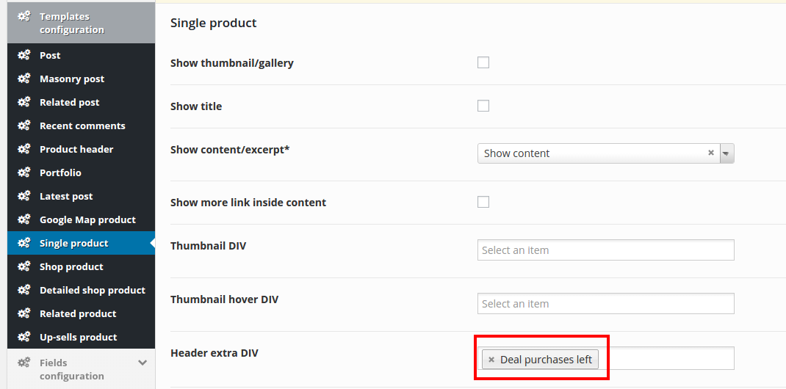
or via AZEXO - Post field Visual Composer element (in footer, header or sidebar "VC Widgets"):
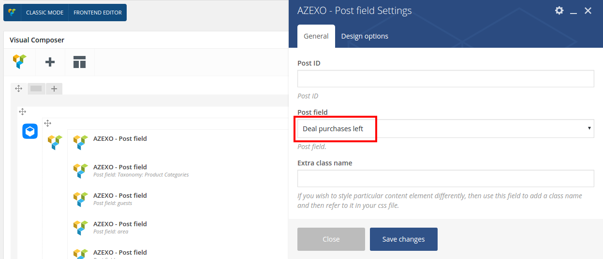
How to enable auto-hiding based on post authors subscriptions plans
In case when "Subscriptions post type" dropdown not equal to "None" - all post will be hided automatically based on post authors subscriptions plans:
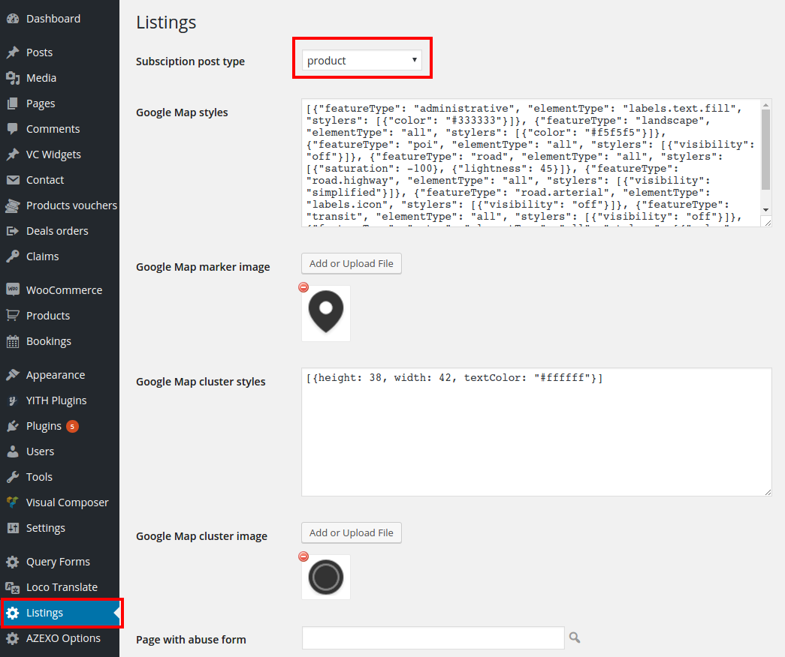
Set published posts number limit (per author) for subscription plan
With "YITH Subscriptions" plugin it can be configured by adding Listing limit meta value to subscription product:
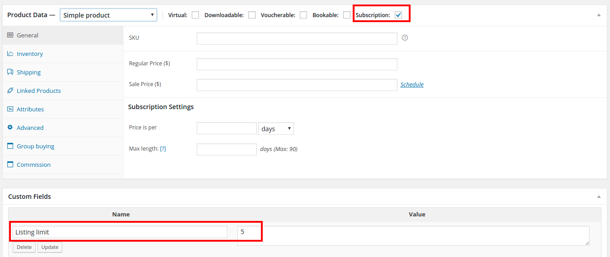
How to use WC Vendors plugin
This plugin create "vendor" role. User who have vendor role have access to plugin shortcodes. All WooCommerce products which have author with "vendor" role automatically make commission record in DataBase after order is paid. Site administrator have interface to pay commissions to all vendors. See more info in plugin online KnowledgeBase
How to edit/create Search/Filtering forms
Interface to configure forms placed on "Query forms" admin page, form builder can be opened by clicking on the "Open form editor" button:
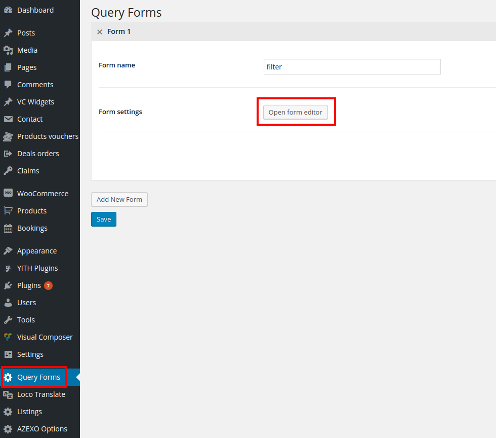
Query form can be added to page or "VC Widget" by this shortcode [azqf-form name="filter"]. Where "name" attribute must equal to "Form name" entered in form settings.
Form editor can be disabled to edit form via JSON by adding this CSS to admin section (for example with Add Admin CSS plugin):
#forms_repeat .cmb-type-textarea-code .cmb-td pre {
display: block !important;
}
#forms_repeat .cmb-type-textarea-code .cmb-td textarea {
display: block !important;
}
#forms_repeat .open-form-editor {
display: none !important;
}
How to edit/create Front-end submission forms
Interface to configure forms placed on "Listings" admin page, form builder can be opened by clicking on the "Open form editor" button:
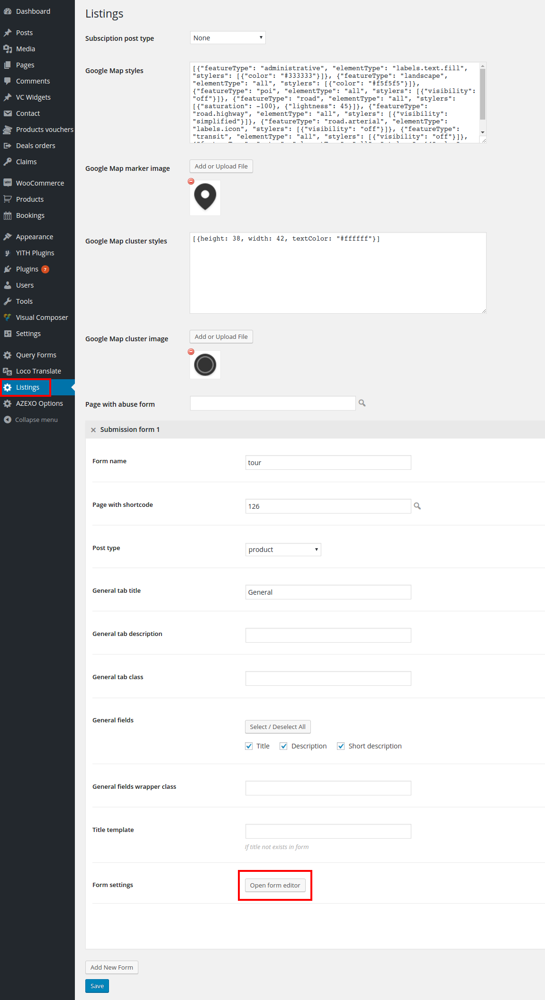
Front-end submission form can be added to page or "VC Widget" by this shortcode [azl-frontend-submission name="tour"]. Where "name" attribute must equal to "Form name" entered in form settings.
Form editor can be disabled to edit form via JSON by adding this CSS to admin section (for example with Add Admin CSS plugin):
#forms_repeat .cmb-type-textarea-code .cmb-td pre {
display: block !important;
}
#forms_repeat .cmb-type-textarea-code .cmb-td textarea {
display: block !important;
}
#forms_repeat .open-form-editor {
display: none !important;
}
How to set status of post after form submission
By default submitted post have "pending" status. Page of this post will return 404 (Not Found) HTTP error. It must be approved by site administrator to make it published.
Use "post_status" attribute to set status of post after submission [azl-frontend-submission name="tour" post_status="publish"]